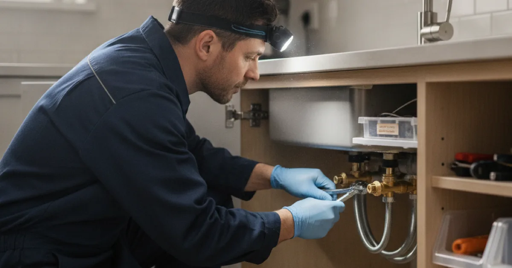

Faucet Installation & Repair in Westchester County, NY
A dripping faucet is small until you multiply it by a year. We repair the ones worth saving and install the ones that are not — cleanly, without damaging what is under the sink.
- Licensed & Insured
- Upfront Pricing
- Clean, Respectful Technicians
- 15+ Years of Experience

The cost of a drip
A faucet dripping once a second wastes far more water over a year than most people would guess — enough to notice on a bill. It is also rarely just cosmetic: a persistent drip usually means a worn washer, cartridge, or seal that will only get worse, and hard water accelerates all three.
The good news is that most drips are a cheap, quick repair if the faucet body itself is sound. The part that fails is usually the cartridge or the washers, and replacing those restores it without a whole new fixture. Family Handyman has a clear walkthrough of what a dripping faucet repair involves if you would rather try a simple one yourself first.
Repair or replace
The decision usually comes down to the condition of the faucet body and whether parts are still available.
Worth repairing:
- A quality faucet that is simply dripping or stiff.
- One where a cartridge or washer is the fault and parts are available.
- Anything recent enough that the finish and body are in good shape.
Worth replacing:
- A corroded body, a cracked base, or a finish flaking off.
- An old or obscure model where parts are no longer made.
- A faucet that has been repaired repeatedly — at some point new is cheaper.
- When you are changing the sink anyway, since the two jobs overlap.
Faucet and sink work often go together, so if a new new sink installation is on the cards, doing both at once saves a second visit and a second round of disconnecting everything under the counter.
Outdoor faucets and our winters
Outdoor taps — hose bibs — deserve their own mention here, because our winters are hard on them and the failure mode is sneaky.
A standard outdoor faucet left connected to a hose over winter traps water in the pipe behind it. That water freezes, expands, and splits the pipe — but often back inside the wall, where you do not see it. Everything looks fine until spring, when you turn the tap on and water pours into the wall cavity instead of out of the spout.
A frost-free hose bib, installed at a slight downward pitch so it drains, largely solves this. If you have had a burst outdoor tap before, replacing it with a frost-free one before the next freeze is worth doing — it is the same seasonal risk behind winter pipe splits elsewhere in the house.
How an installation goes
A straightforward faucet swap is usually well under an hour. We shut the water at the fixture valves, disconnect the old faucet, clean up the mounting surface, and set the new one with fresh supply connectors.
The step that catches out a rushed job is the shut-off valves underneath: old ones often weep the moment they are disturbed, so where they are suspect we replace them while the water is already off. It is a small addition that saves a call back.
What affects the cost
We price the work before starting. A like-for-like replacement is quick; the variables are what sits underneath and whether you are changing configuration.
Corroded old shut-off valves, seized connections, or switching from a two-handle to a single-handle layout all add a little time. If you are supplying the faucet, checking it matches your sink’s hole layout before buying avoids the one surprise that turns a quick job into a return trip.
Common questions
Can I supply my own faucet and have you fit it?
Usually, yes. It is worth checking the configuration matches your sink’s hole layout before you buy, and quality varies a lot at the budget end — a cheap faucet often means another visit sooner than you would like.
Why is my new faucet already dripping?
Occasionally a defective cartridge out of the box, sometimes debris from the pipes lodging in a seal after the work. Either is quick to sort — let us know and we will put it right.
My water comes out cloudy or sputtering. Faucet problem?
Usually the aerator — cloudy water is often just air, and sputtering can be a clogged aerator. Both are easy. If it persists across every tap, the cause is elsewhere in the system.
Should I replace an outdoor tap that burst?
With a frost-free one, yes. A standard hose bib that split once will do it again, and the damage happens inside the wall where you cannot see it developing.
How long does a faucet swap take?
A straightforward replacement is usually well under an hour. Corroded old shut-off valves or seized connections can add time, and we will flag that before starting if we see it.
Stop the drip, cleanly
Licensed, insured, and tidy under the sink.